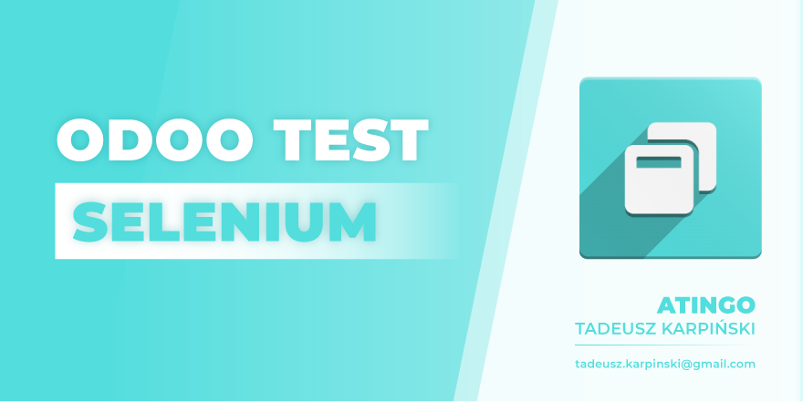
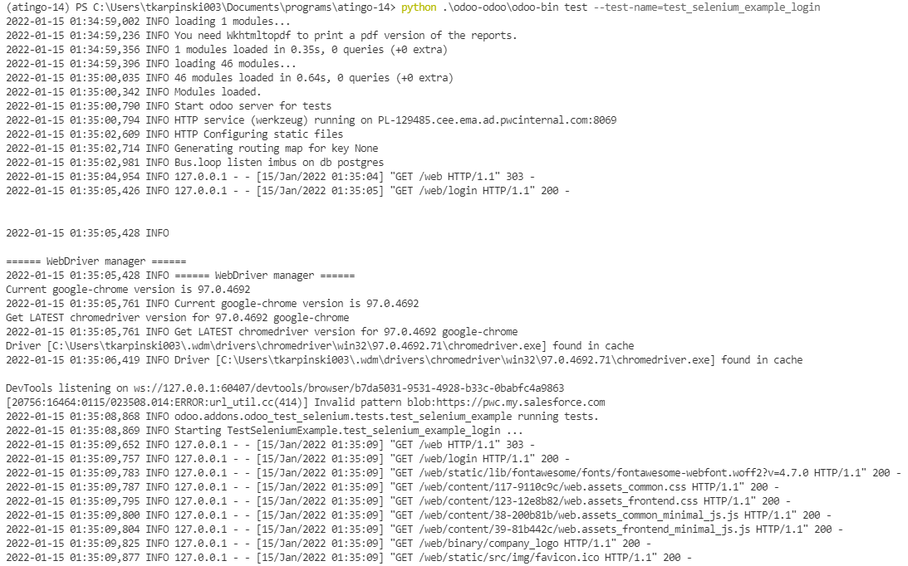
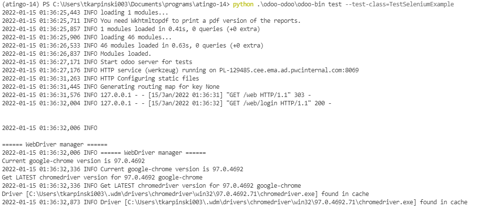
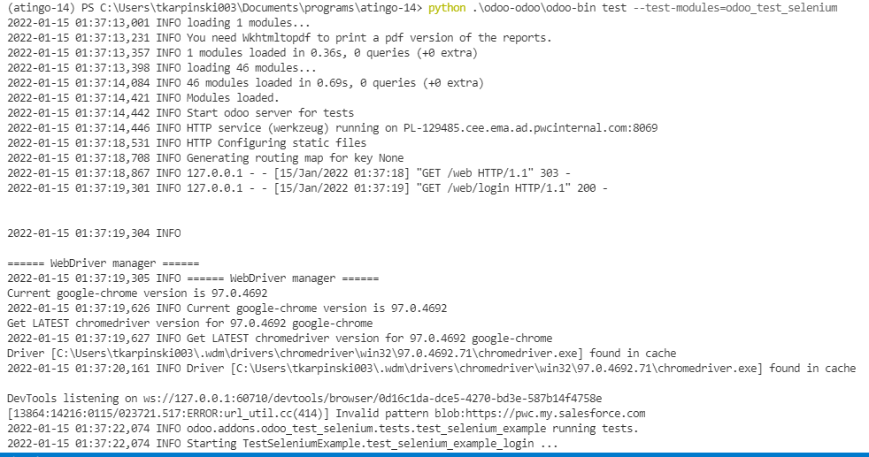
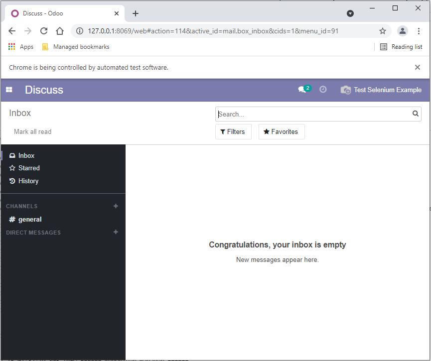

<div class="container" style="font-weight: 400 !important; font-size: 1rem !important;">
    <div class="col-sm-12">
        
        <h2 class="oe_slogan" style="color:#875A7B;">Odoo Test Selenium</h2>
        <p>This module requires odoo_test module! With this module developer is able to run selenium tests. With simple command "test" you are able to run single test, test class or all tests for a module. It support controllers testing! By default browser is ran in background. To show browser during test add special parameter <b>--browser-visible</b> in test example browser will be always shown.</p>
        <h2 class="oe_slogan" style="color:#875A7B;">Examples</h2>
        <p>Run one test</p>
        <pre style="background-color: #f5f5f5">python odoo-bin test --test-name=test_selenium_example_login</pre>
        <p>Run all tests from test class</p>
        <pre style="background-color: #f5f5f5">python odoo-bin test --test-class=TestSeleniumExample</pre> 
        <p>Run all tests from module</p>
        <pre style="background-color: #f5f5f5">python odoo-bin test --test-module=odoo_test_selenium</pre> 
        <p>Run all tests from modules</p>
        <pre style="background-color: #f5f5f5">python odoo-bin test --test-modules=odoo_test_selenium,web</pre>
        <br/>
        <p>In examples above default configuration file has <b>db_name=v14_atingo</b>. User can select target db as in example below:</p>
        <pre style="background-color: #f5f5f5">python odoo-bin test --database=v14_odoo_vanilla --test-name=test_selenium_example_login</pre>
        <br/>
        <p>This module must be imported from default path. It won't work with selected custom configuration file</p>
        <pre style="background-color: #f5f5f5">python odoo-bin test --config=/home/tkarpinski/odoo_14/conf/odoo.conf</pre>
        <br/>
        <p>Configuration file with path to custom addons should be coming from default path. If this is not possible, add this module to <b>odoo/addons</b> directly</p>
        <h2 class="oe_slogan" style="color:#875A7B;">Preinit</h2>
        <p>Before you start working with this module apply suggestions above. This module is using additional python modules, you can install them from <b>requirements.txt</b></p>
        <h2 class="oe_slogan" style="color:#875A7B;">Details</h2>
        <p>odoo_test module checks selected tests. If test inherits HttpCase a new odoo instance with shared cursor will be started. If test inherits SeleniumHttpCase a new browser will be shown. Thanks to it user can test controllers. You can find example in <b>tests/test_selenium_example.py</b>. In this example a new user is created, browser is opened and there logging is is processed. This is a test so all data will be <b>rollbacked!</b></p>
        <br/>
        <p>In case of any questions don't hesitate to email me: <b>tadeusz.karpinski@gmail.com</b></p>
        <h2 class="oe_slogan" style="color:#875A7B;">Screenshots</h2>
        <p>Screenshot 1</p>
        
        <p>Screenshot 2</p>
        
        <p>Screenshot 3</p>
        
        <p>Screenshot 4</p>
        
    </div>
</div>